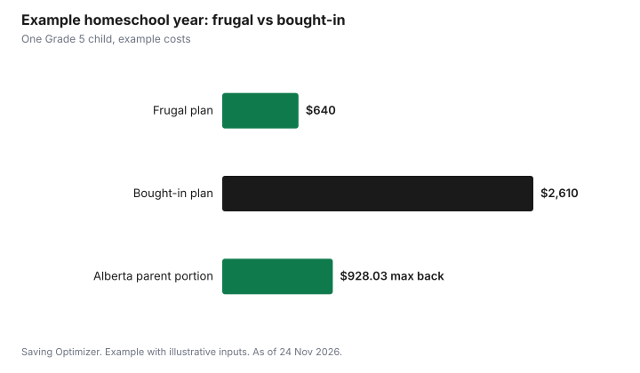

Education · Canada
Homeschooling in Canada: What It Costs and What Help Exists

Homeschooling in Canada can cost a few hundred dollars a year or several thousand, and the biggest swing comes from your province. Alberta pays a per-student home education grant through a supervising school authority, while Ontario offers no homeschool funding at all. Curriculum, books, activities and any paid courses are the main costs. Most families can keep the core cost low with a library card, free provincial curriculum documents and a short list of paid materials.
Key takeaways
- Alberta's Home Education funding for 2026-27 is $928.03 per student in Grades 1 to 12 and $464.02 for kindergarten, paid to the supervising school authority. Up to 50% goes back to parents for eligible materials, with receipts.
- Ontario has no homeschool funding. Parents of school-age children notify their board, and the family pays all costs.
- Free tools carry most of the load: library cards, provincial curriculum documents and public online resources.
- Teens who want an Ontario diploma can take TVO ILC credits, at $40 per course for most Ontario residents.
- Example: a frugal year of about $640, compared with $2,610 for a family that buys a full boxed curriculum and paid classes.
Provincial rules: who you tell and who checks
Education is provincial, so the rules start with where you live. In Ontario, Policy/Program Memorandum 131 tells school boards how to handle home schooling. Parents who withdraw a child of compulsory school age give the board written notice, and the board replies with a letter that excuses the child from attendance. Ontario does not supervise curriculum in the way Alberta does, and it does not pay families.
Alberta is the opposite model. A home education student is registered with an associate school board or an accredited independent school, which supervises the program and receives the provincial grant. British Columbia gives families a choice between registering as homeschoolers with a school, which comes with no funding, or enrolling in a public distributed learning (online) school, which is free but follows the BC curriculum. Other provinces sit somewhere in between. Check your provincial ministry of education's home schooling page before you start, because some provinces require an annual plan or a progress report.
Funding in some provinces
Alberta's 2026-27 funding is the clearest example. The province's parent declaration form says parents who submit receipts for at least 75% of eligible expenses receive the full parent portion of $928.03 for Grades 1 to 12, or $464.02 for kindergarten, and they have up to two years to claim it. The rest stays with the school authority for supervision and supports. Tuition is not an eligible expense, and the list of allowed items is in Alberta's Standards for Home Education Reimbursement.
In provinces without a grant, a homeschooling family may still get indirect help: free access to some public online courses, library programs, and in some areas the right to join school sports or a single class. None of that is guaranteed. Ask the board in writing and keep the reply.
| Province | Model | Money to families |
|---|---|---|
| Alberta | Supervised by an associate school authority | Parent portion of $928.03 per Grade 1-12 student for 2026-27 (half of the grant), with receipts |
| Ontario | Notice to the school board (PPM 131) | None. TVO ILC high school credits cost $40 per course for most residents |
| British Columbia | Registered homeschooling or public distributed learning | None for registered homeschooling. Distributed learning is a free public school option |
| Other provinces | Varies: registration, annual plan or assessment | Check your ministry; some school divisions offer materials or supports |
Curriculum costs
Curriculum is where budgets drift. A boxed, all-subject curriculum can cost several hundred dollars per child per year, and add-ons like science kits and online subscriptions stack up. Many families use the free provincial curriculum documents as a checklist and fill them with library books, used workbooks and free public resources. Buy used where you can: homeschool co-ops and local buy-and-sell groups often resell last year's materials at a steep discount.
- Start with the provincial curriculum document for your child's grade. It is free and tells you what a school would cover.
- Buy one subject at a time. Math is the subject families most often pay for, because a structured sequence helps.
- Reuse materials for younger siblings. Consumable workbooks cost more over time than non-consumable textbooks.
- Track every purchase if you are in Alberta. Receipts are how you get the parent portion back.
Library resources and free learning
A public library card is the best-value tool in homeschooling. Most Canadian libraries lend e-books and audiobooks, offer free access to learning databases, and run children's programs at no charge. Some lend museum or attraction passes too. For teens, free online courses through the library can cover typing, software and language practice. See our guide to free online courses through your library.
For a teenager who wants an Ontario Secondary School Diploma, the family cannot award the diploma. TVO's Independent Learning Centre is the main route: its site says most Ontario residents registering as independent students pay a partially subsidized fee of $40 per course, and homeschooled applicants upload the board's response letter. Fees are non-refundable.
Budget: an example year
These numbers are an example, not quotes. They compare a frugal plan with a plan that buys a full curriculum and paid classes for one child in Grade 5.
| Item | Frugal plan | Bought-in plan |
|---|---|---|
| Curriculum | $150 (math program only, used) | $900 (boxed all-subject set) |
| Books and supplies | $120 | $300 |
| Classes and activities | $250 (community centre) | $1,000 (weekly paid classes) |
| Field trips | $120 (library passes, free days) | $410 |
| Total | $640 | $2,610 |

In Alberta, the same family could claim up to $928.03 of eligible material costs back with receipts, which covers more than the whole frugal plan's materials. In Ontario the full amount comes out of the family budget, so the free resources matter more. Remember the hidden cost too: if one parent cuts paid work hours, that lost income usually dwarfs the curriculum bill. Our guide to paying for university without enough RESP savings is worth reading early if homeschooling means less room to save.
Sources
- Alberta Education and Childcare, Home Education Funding Transfer of Parent Portion Declaration Form 2026-27 (parent portion $928.03 Grades 1-12, $464.02 ECS; receipts for 75% of eligible expenses; two years to claim), checked 24 Nov 2026.
- Alberta, Funding Manual for School Authorities 2026/27, section C1.6 Home Education, checked 24 Nov 2026.
- Ontario, Policy/Program Memorandum 131: Home Schooling, checked 24 Nov 2026.
- TVO ILC, Frequently Asked Questions and How to Apply ($40 per course for most Ontario residents; homeschool applicants need the board's response letter; fees non-refundable), checked 24 Nov 2026.
Frequently asked questions
How much does homeschooling cost in Canada?
It depends on your choices. A family using library books, free curriculum documents and one paid math program can spend a few hundred dollars a year per child, while a boxed curriculum and weekly paid classes can cost $2,000 or more. Lost income from reduced work hours is often the biggest cost.
Does Ontario pay families to homeschool?
No. Ontario does not fund home schooling. Parents notify their school board under Policy/Program Memorandum 131 and pay for materials themselves. Teens can take TVO ILC credits, which cost $40 per course for most Ontario residents.
How much is Alberta's home education funding?
For 2026-27, Alberta lists $928.03 per student in Grades 1 to 12 and $464.02 for kindergarten as the parent portion, which is half of the grant paid to the supervising school authority. Parents claim it with receipts for eligible materials.
Can a homeschooled teen earn a high school diploma?
In Ontario, a family cannot grant the diploma. A teen can earn credits through TVO ILC or a school, and must meet the diploma requirements. Other provinces have their own routes, so check with your ministry of education.
What is the cheapest way to homeschool?
Use your library card, the free provincial curriculum document for each grade, used materials and free community programs. Pay only for the subjects where a structured program really helps, such as math.
Researched and drafted with AI assistance and fact-checked against official Canadian sources. How we create content.
Note: Rules and funding change each school year. Confirm with your provincial ministry of education and your school board. Education only.